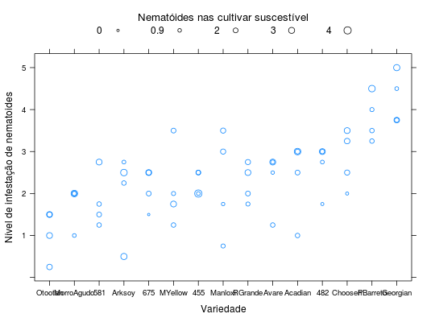

Experimento de Arruda (1952), em blocos casualizados, em que se compararam 21 variedades de soja para estudar sua suscetibilidade ao ataque de nematóides. Em cada parcela foram colocadas plantas da variedade Abura, bastante suscetível a nematóides cuja infestação seria proporcional à quantidade de nematoides do solo. Tanto as raízes das variedades estudadas como as da variedade padrão tiveram sua infestação avaliada a olho, com atribuição de notas de 0 (sem ataque aparente) a cinco (com infestação severa). Das variedades estudadas, apenas 15 foram registradas.
Um data.frame com 60 observações e 4 variáveis, em que
blocvariedXYPIMENTEL-GOMES (2009), Tabela 16.3.1, pág. 306.
library(lattice) data(PimentelTb16.3.1)#> Warning: data set ‘PimentelTb16.3.1’ not foundstr(PimentelTb16.3.1)#> 'data.frame': 60 obs. of 4 variables: #> $ bloc : Factor w/ 4 levels "1","2","3","4": 1 1 1 1 1 1 1 1 1 1 ... #> $ varied: Factor w/ 15 levels "455","482","581",..: 1 8 13 12 2 4 6 9 11 7 ... #> $ X : num 3 4 4 3 3 3.5 4.25 3 3.25 2.25 ... #> $ Y : num 2.5 3.5 1 1.25 3 2.5 0.5 3.75 2 2.5 ...PimentelTb16.3.1$varied <- with(PimentelTb16.3.1, reorder(varied, Y)) cex <- with(PimentelTb16.3.1, { x <- X - min(X) cex <- x/max(x) cex <- 0.5 + 1 * cex nums <- function(x) seq(min(x), max(x), length.out = 5) key <- list(text = list(formatC(nums(x), digits = 1)), points = list(cex = nums(cex), pch = 1), title = "Nematóides nas cultivar suscestível", cex.title = 1.1, columns = 5) return(list(cex = cex, key = key)) }) xyplot(Y ~ varied, data = PimentelTb16.3.1, cex = cex$cex, key = cex$key, ylab = "Nível de infestação de nematoides", xlab = "Variedade")